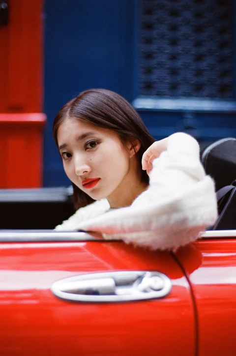
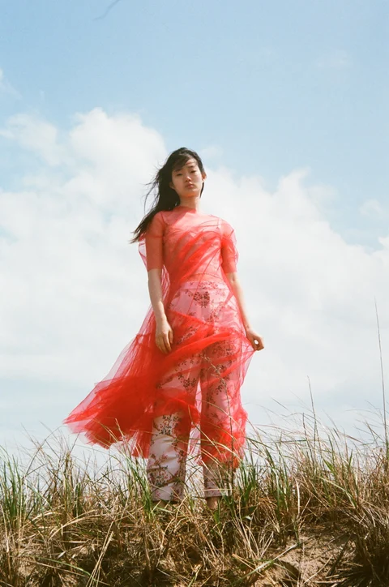
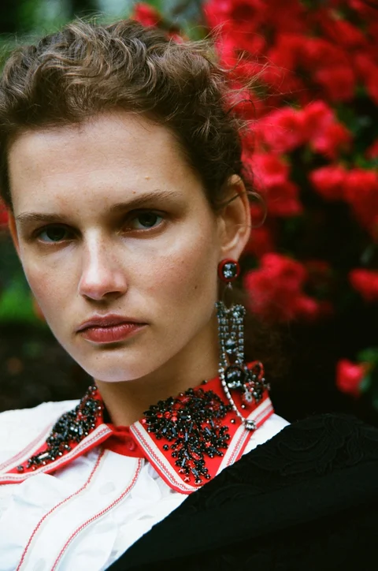
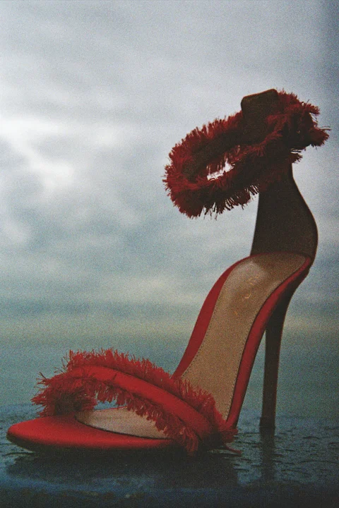
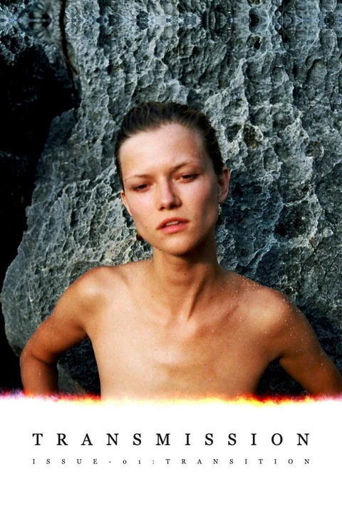
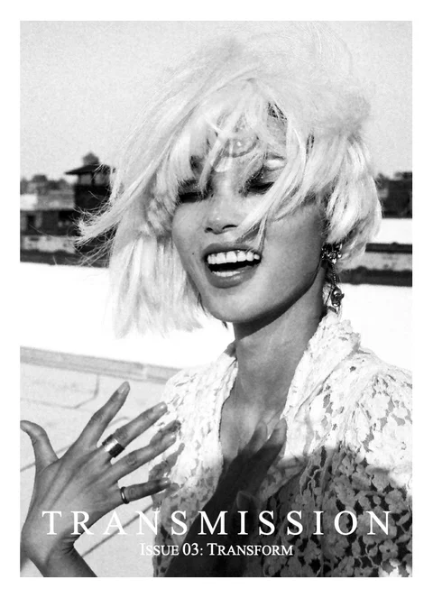

Photographs, films, and independent publications by Dylan Forsberg.
A personal approach to portraiture, fashion, and storytelling.
“Personal, intimate, and refreshingly direct.”
Featured Projects
Chanel
Rouge Allure
International Beauty Campaign

Vogue China
“A cornucopia of color.”
Fashion


Accessories

Transmission Magazine


“One of the most exciting publications of the moment.”